graphic-stroke-animation · çizim
GEÇTİ · kapı farkı %0.006 · kapı SSIM 0.99828 · ham fark %0.147 · ham SSIM 0.99671 · aynı Gauss çekirdeği σ=1.2
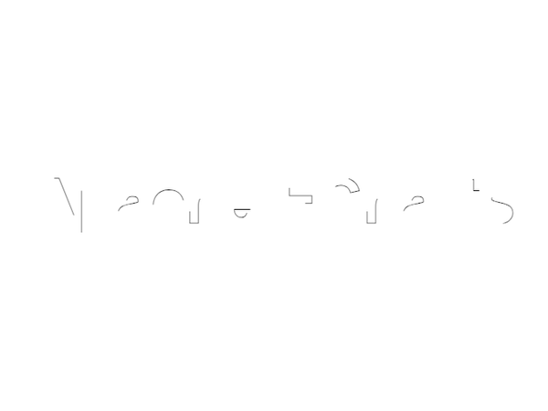
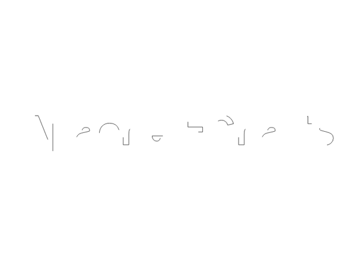
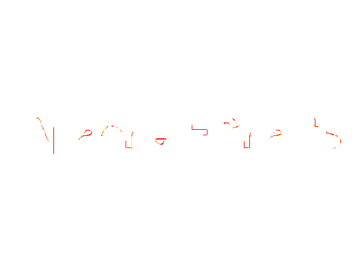
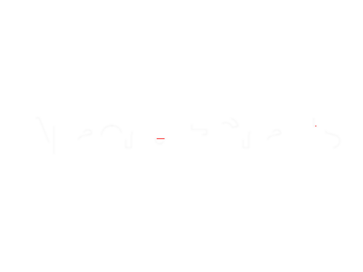
pixelmatch 0.1 · değişen piksel ≤ %1 · SSIM ≥ 0.99. Yoğun tipografi profili varsa değişmeyen eşikler iki görüntüye de aynı Gauss çekirdeği uygulandıktan sonra değerlendirilir; ham metrik ve ham fark daima gösterilir.
GEÇTİ · kapı farkı %0.006 · kapı SSIM 0.99828 · ham fark %0.147 · ham SSIM 0.99671 · aynı Gauss çekirdeği σ=1.2




GEÇTİ · kapı farkı %0.020 · kapı SSIM 0.99562 · ham fark %0.727 · ham SSIM 0.99247 · aynı Gauss çekirdeği σ=1.2
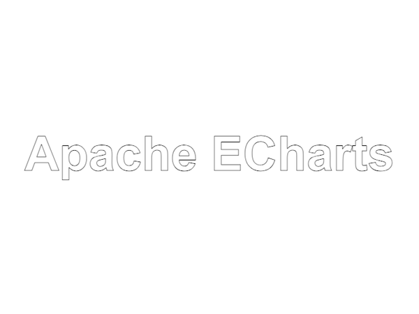
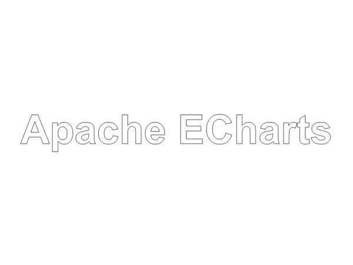
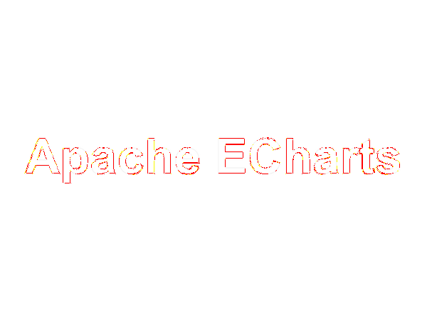
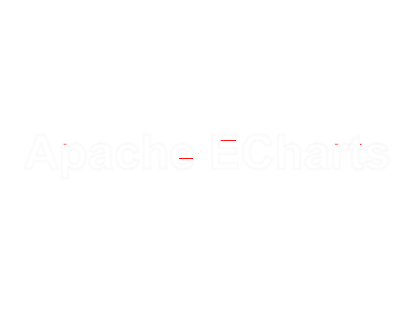
GEÇTİ · kapı farkı %0.037 · kapı SSIM 0.99776 · ham fark %0.950 · ham SSIM 0.99716 · aynı Gauss çekirdeği σ=1.2
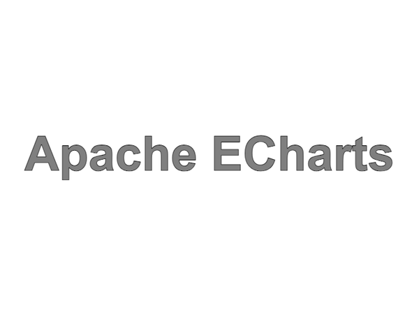
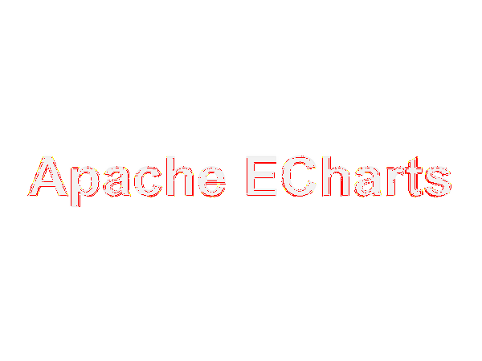
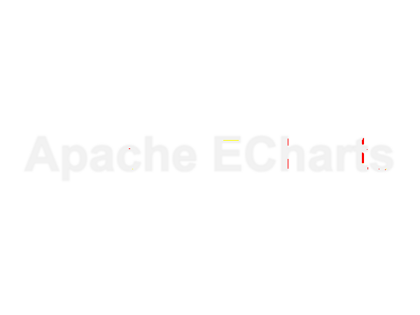
GEÇTİ · kapı farkı %0.000 · kapı SSIM 1.00000 · ham fark %0.000 · ham SSIM 0.99999 · aynı Gauss çekirdeği σ=0.8
GEÇTİ · kapı farkı %0.000 · kapı SSIM 0.99999 · ham fark %0.000 · ham SSIM 0.99999 · aynı Gauss çekirdeği σ=0.8
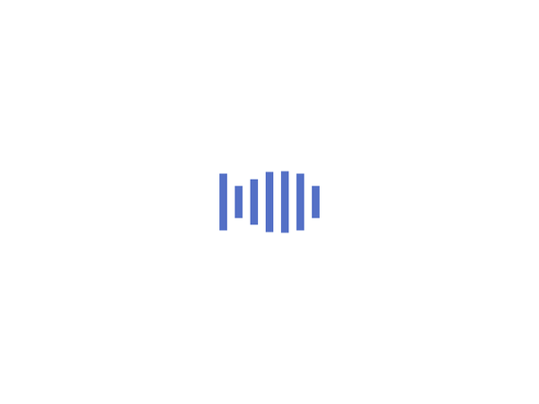
GEÇTİ · kapı farkı %0.000 · kapı SSIM 0.99999 · ham fark %0.000 · ham SSIM 0.99998 · aynı Gauss çekirdeği σ=0.8
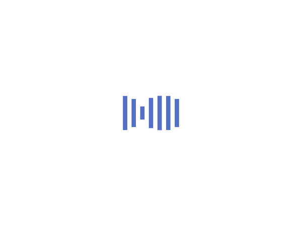
GEÇTİ · kapı farkı %0.282 · kapı SSIM 0.99589 · ham fark %1.522 · ham SSIM 0.98704 · aynı Gauss çekirdeği σ=3.5 · yapısal 1/1
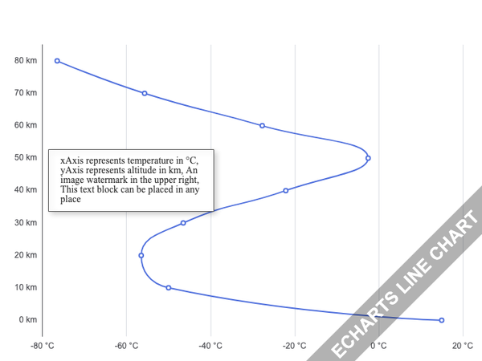
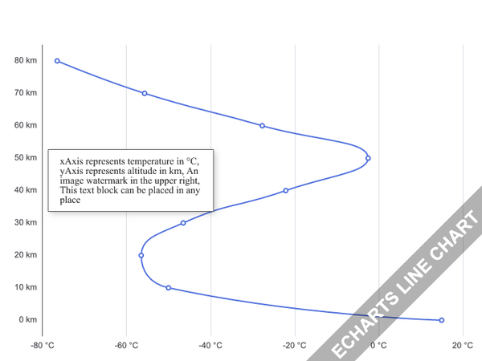
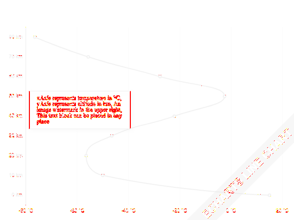
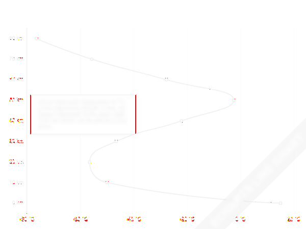
GEÇTİ · kapı farkı %0.002 · kapı SSIM 0.99928 · ham fark %0.152 · ham SSIM 0.99909 · aynı Gauss çekirdeği σ=0.8
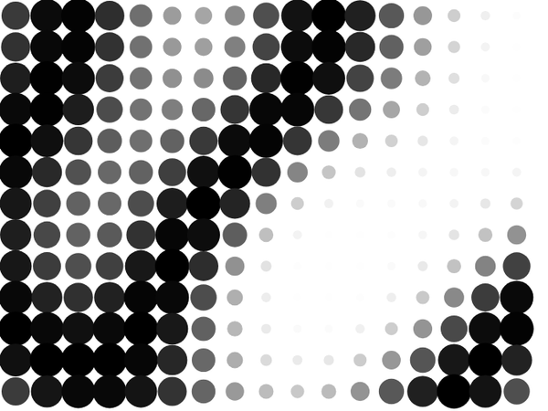
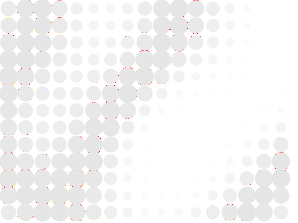
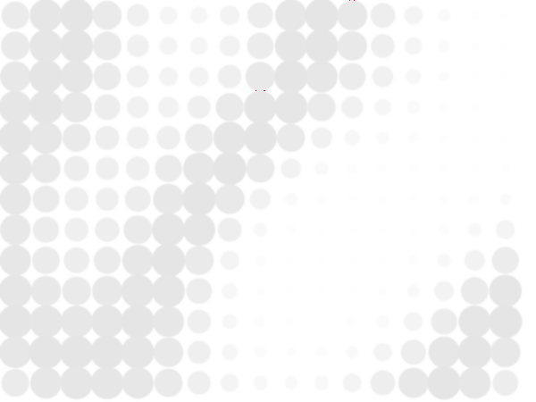
GEÇTİ · kapı farkı %0.000 · kapı SSIM 0.99962 · ham fark %0.044 · ham SSIM 0.99948 · aynı Gauss çekirdeği σ=0.8
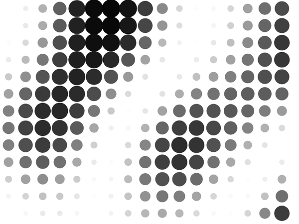
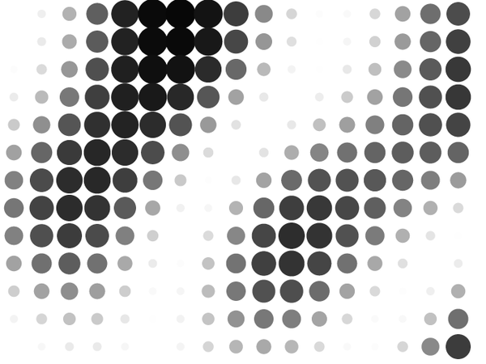
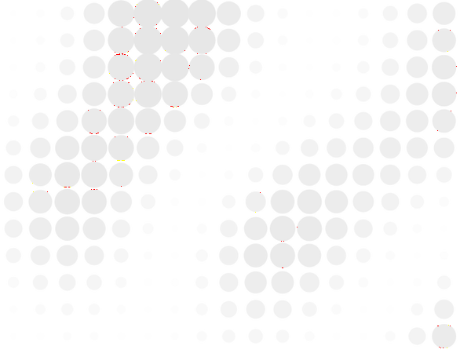
GEÇTİ · kapı farkı %0.000 · kapı SSIM 0.99922 · ham fark %0.147 · ham SSIM 0.99903 · aynı Gauss çekirdeği σ=0.8
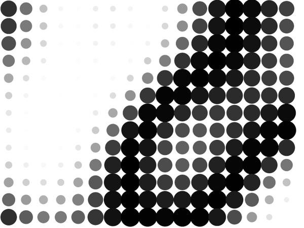
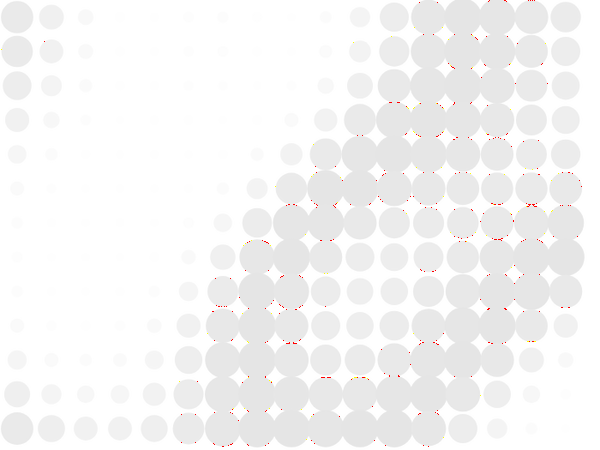
GEÇTİ · kapı farkı %0.078 · kapı SSIM 0.99880 · ham fark %0.191 · ham SSIM 0.99807 · aynı Gauss çekirdeği σ=0.8 · yapısal 2/2
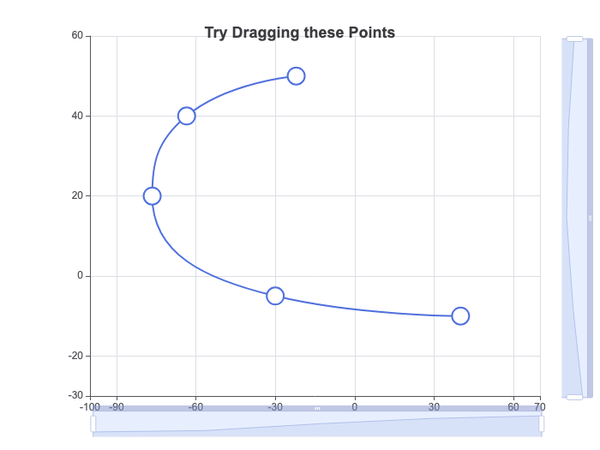
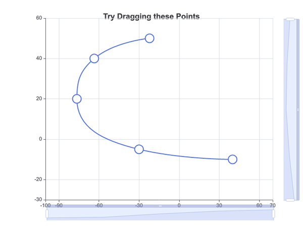
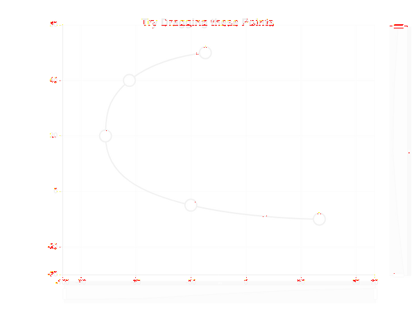
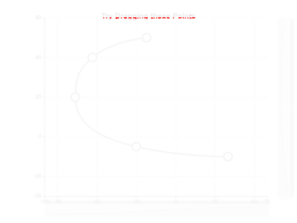
GEÇTİ · kapı farkı %0.078 · kapı SSIM 0.99883 · ham fark %0.190 · ham SSIM 0.99810 · aynı Gauss çekirdeği σ=0.8 · yapısal 2/2
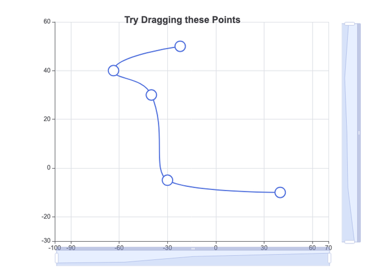
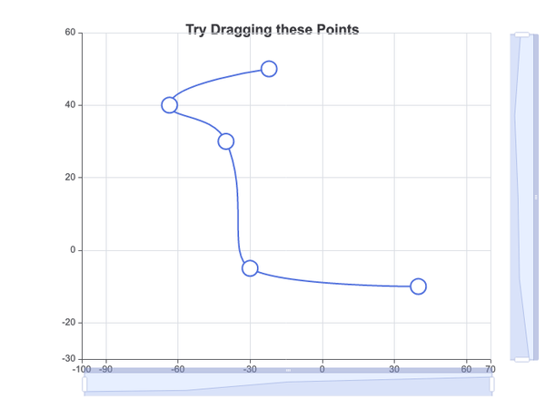
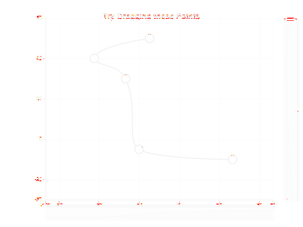
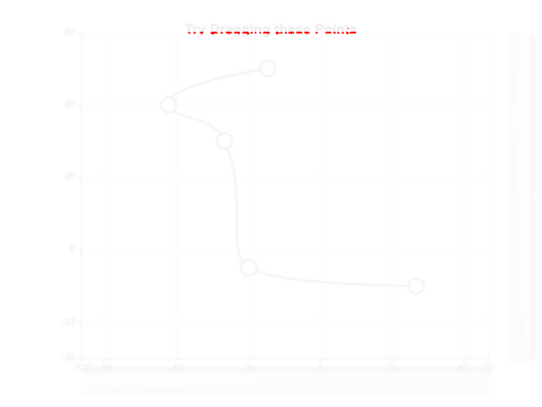